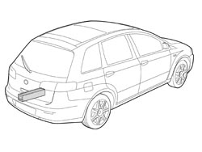
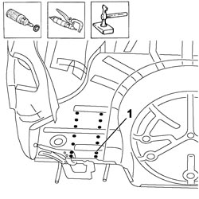
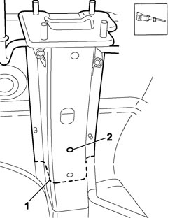
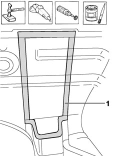
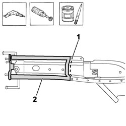
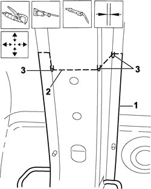
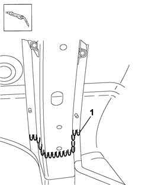
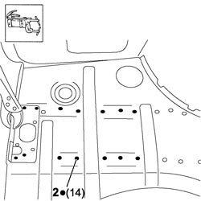
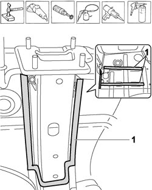

7210B61 R.R. BOOT FLOOR PAN SIDE MEMBER - PARTIAL
- Path
- Procedures > 72 PANELS AND FRAMES > 7210 REMOVING-REFITTING > 7210B STRUCTURAL ELEMENTS (CENTRE AND REAR SECTION) > 7210B61 R.R. BOOT FLOOR PAN SIDE MEMBER - PARTIAL
- Kind
- repair procedure (removal / refitting; the operation number is the code)
- Applies to
- all engines; all production periods
- Interactive page
- https://sloeber94.github.io/elrnDB-fCrm/en/#/194001234
Applies to: all engines; all production periods
 Removing
Removing
 Refitting
RefittingOp. 7210B70 R.R. REAR TRIM (STRUCTURAL ELEMENT)
Op. 7210B82 R.R REAR CROSSMEMBER
- Check that the components connected are not distorted by checking the bodyshell alignment measurements using suitable equipment (gauges, templates or jigs).
- Straighten the body as necessary.

Applies to: all engines; all production periods
- Use a rotary brush to remove the paint to gain access to the spot welds.
1. Use the chamfering machine to remove the spot welds shown in the diagram.
- Use the hammer and chisel and remove the spot welds chamfered previously.

Applies to: all engines; all production periods
1. Use a hack sawing machine following the cutting lines shown in the diagram.
2. Remove the rail from the vehicle.

Applies to: all engines; all production periods
- Straighten the edges of the vehicle using a mallet and profiled block.
- Remove the spot weld residues using a disc grinder.
- Use a rotary brush to clean the areas treated previously.
1. Apply electro-galvanizing paint.

Applies to: all engines; all production periods
1. Take accurate measurements and cut the part using a hacksaw. Leave enough panel at the sides to ensure an overlap.
2. Remove the anti-corrosion treatment from the entire perimeter of the inside and outside of the replacement part using a rotary brush.
- Apply electro-weldable paint to the edges treated previously.

Applies to: all engines; all production periods
Refitting
Removing1. Position the rail correctly on the vehicle and secure it using self-locking clamps.
2. Use the saw to trim the panel along the joint to remove any excess parts.
3. Tack the rail using some seam weld points.
- Fit the rear trim and sacrificial beam temporarily and check the alignment, surrounding gaps and tailgate closure.

Applies to: all engines; all production periods
1. Use a MIG welder to seam weld the joint line.

Applies to: all engines; all production periods
1. Use a spot welder in the areas shown in the diagram.

Applies to: all engines; all production periods
- Correct any distortions to the panel using a profiled block and mallet.
- Use a disc grinder to level and remove the welding.
- Use a rotary brush to clean the areas welded previously.
1. Apply rustproofing on the weld areas, above and below the floor.
- Seal the join lines between the replacement part and the vehicle.
- Apply underbody protection.

Applies to: all engines; all production periods